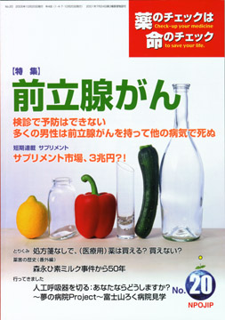

No.20 特集 前立腺がん 2005年10月 発行
 前立腺がんの早期発見・早期治療にPSA検査を、という宣伝がされています。しかし、ちょっと待ってください。PSAを検査して、がんが早期発見されたとして、本当に予防といえるのでしょうか？ PSA値が高ければ、生検をしてがんがあるかどうか確定した方がいいのでしょうか。がんがあった場合、治療法は？ すぐ手術するのがいいのか、薬物療法や放射線療法がよいのか、いっそ何もしないのが一番なのか。
壮年以上の男性の半分以上（70歳以上なら8割以上）が前立腺がんを持ちながら他の病気で亡くなるとのデータがあります。この事実をはじめ、一つひとつ、科学的根拠を確かめながら、結論はどうなるのか、よく考えてみましょう。
今回の特集は、2004年11月に開催した第4回医薬ビジランスセミナーでの講演の内容をもとに、大幅に加筆したものです。
もくじ
特集
■前立腺がん 検診で予防できない
■前立腺がんの治療
■薬の説明書（NPOJIPの判定付き）
・酢酸リュープロレリン（リュープリン）
・フルタミド
短期連載
■加熱するサプリメント市場、3兆円？！
提言
■NPOJIPの提言
上がるなら、下がるまで待とう、熱と血圧
連載
■リレーエッセイ 私の自分史―サリドマイド被害者として
■みんなのやさしい生命倫理 ２０
インフォームド・コンセント（６） セカンド・オピニオン
■市民の視点
薬害を伝える難しさ
■映画のなかのクスリ（13） スコポラミン（自白剤）
■EBM超入門（9）
臨床試験を登録することが重要なワケ
■薬害の歴史 番外編
森永ひ素ミルク中毒事件から50年
■行ってきました その１
人工呼吸器を切る：あなたならどうしますか？
■行ってきました その２
〜夢の病院Project〜富士山ろく病院見学
■コーヒー無礼区 へこたれないぞ！
とりくみ
■医師（医療機関）とのつき合い方−NPOJIPへの相談事例から
処方箋なしで、（医療用）薬は買える？ 買えない？
新連載
■海外の情報 米国メルク社：鎮痛剤裁判で敗訴
■質問箱
Q1：19号の「おまじな発言」にひとこと
Q2：降圧剤の副作用？ 頭痛、胸痛、むくみなど
■読者の声
・「もっと早くこの本に出会っていれば…」
・「医師、研究者自身による医療批判がほしい」
・「息子や職場の人たちにも勧めています」
・「『がん治療チーム』の一員として」 など
■書評
・『バリデーション―認知症の人々との超コミュニケーション法』
・『気の発見』
・『臨床医学研究序説―方法論と倫理―』
・『高血圧は薬で下げるな！』
■バックナンバー常備店
■NPOJIP関連書籍紹介/TIP出版物
■NPOJIP籍申込み用紙
■編集後記
病院でよく聞く言葉
（特集にちなんだ言葉を簡潔に解説）忙しい人はまずここから
○化学療法 −抗がん剤使用、見直し論も
（日本経済新聞に浜六郎が掲載していたものを改変。加筆、新しく追加したものを含む）
リレーエッセイより
私の自分史 サリドマイド被害者として 篠澤睦美
つわりの薬「イソミン」
1962年2月3日、私は北海道の静内という町で長女として生まれました。道央に位置する静内は、牧草地が広がる緑豊かな小さな町です。当時では一般的な自宅出産で、私はお産婆さんに取り上げられました。その頃の私の家は決して裕福ではなく、両親は共働きで母は私が生まれるまで仕事をしていたそうです。母のつわりはひどく、妊娠3か月頃に薬局でつわりに効く薬と聞いたところ「イソミン」という薬を勧められたそうです。その薬がよく効いたのか、服用すると身体がとても楽になったそうで、出産する2〜3か月前まで服用していたといいます。サリドマイドが配合されていたイソミンの服用で私はサリドマイドの被害を受け、肩から小さな腕が伸びていて、その先に数本の指が出ているような状態で生まれてきました。
サリドマイド症としては私のように短い腕の症状が広く知られていますが、そもそもサリドマイド剤によって血管の新生が阻害され成長が止められるためで、臓器や耳などどこにでも奇形や欠損で聴力を失った子どもも多く、また重篤な内臓疾患を抱えた子どもたちの多くは、その小さな命をも失いました。被害発生当初は死産や流産も含めると、70%の死亡率だったと言われています。
（以下、引用省略）
詳しくは本誌で。